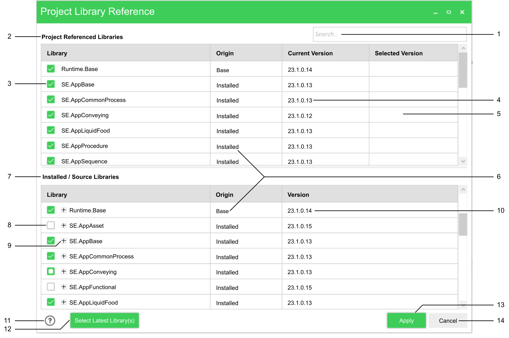

This topic defines the Project Library Reference dialog box. This dialog box is used to modify, remove or add library references in the project.

The search bar allows to research libraries in the Project Referenced Libraries section and in the
Installed/ Source Libraries section simultaneously.When text is added to the search bar, only libraries with this specific text in their name remain displayed in the sections.
The Project Referenced Libraries
section lists the libraries already referenced in the project as well as all the changes made with this dialog box.When the check box is ticked, the chosen library is referenced in the project. If the check box is unticked, the library is removed from the referenced library list of the project and the library line disappears from the section.
The Current Version column, shows the current version of the libraries referenced in the project.
The
Selected Version column, shows all modifications made to libraries referenced with this dialog box. If the column is empty, no libraries have been added nor modified.Source: Is a library created by the user that is directly integrated it in the current solution.
Installed: Is a library that is installed in the engineering workstation and can be referenced in the project.
Base: Is a base library that is installed in the engineering workstation and can be referenced in the project.
The Installed/Source Libraries section lists all the libraries installed and available on the current engineering workstation.
There is three different types of check box:
: Indicates that the library is not referenced in the project.
: Indicates that the latest version of this library is referenced.
: Indicates that this specific library is referenced, but not the latest version. Click on the + to see which version of this library is referenced.
The + sign displays all the versions of this specific installed library.
The Version column within the Installed/Source Libraries section gives the version of the library present on this line.
This help button opens the online help directly on this page.
The Select Latest Library(s) button selects the latest version of each referenced libraries in the project.
The Apply button validates and executes all the changes made in the box dialog. When clicking on the Apply button all the modifications are applied in the project.
The Cancel button closes the dialog box and discards the changes.